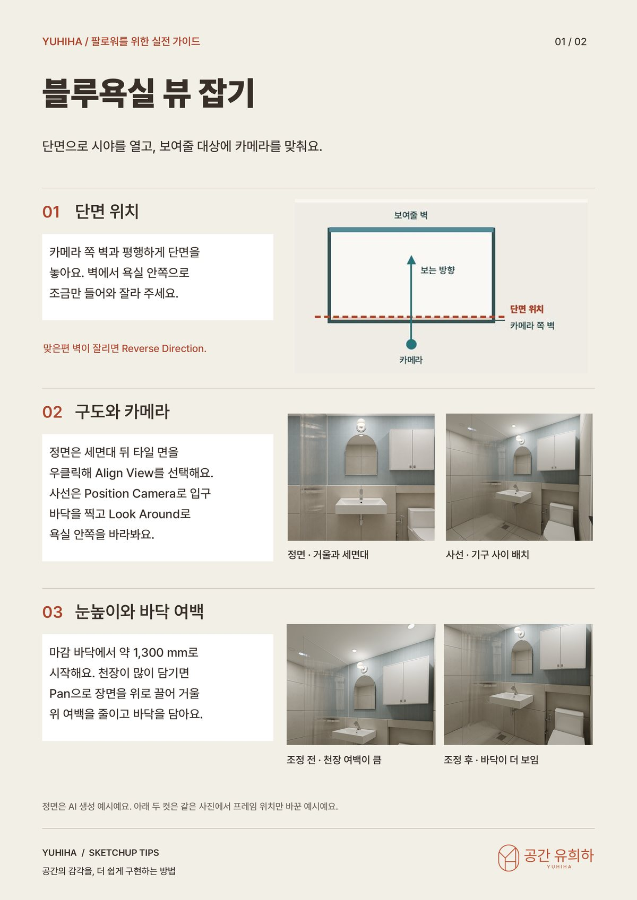
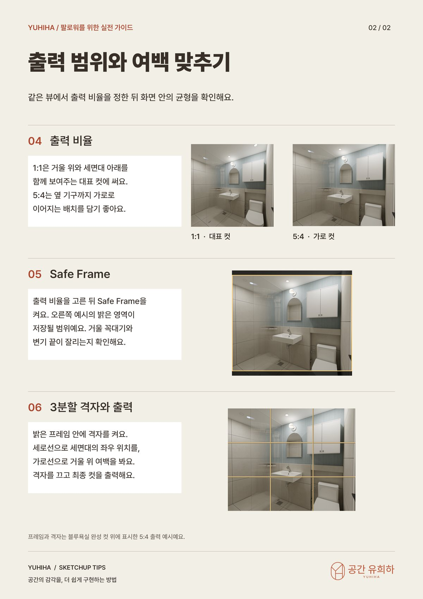

YUHIHA / SKETCHUP TIPS블루욕실
블루욕실
뷰 잡기
렌더링이 어색할 때는 재질보다 먼저 '어디서, 어떤 높이로 보느냐'를 봐야 해요. 스케치업에서 단면으로 시야를 열고 카메라·눈높이를 맞추는 법, 출력 비율과 Safe Frame·3분할 격자로 마지막 점검하는 법을 2쪽에 정리했어요.
가이드 PDF 받기2쪽 · 0.6MB같은 모델로 따라 해 보세요. 예시 컷은 블루 욕실 모델이에요. 모델링 파일은 블루 욕실 렌더링 세트에서 받을 수 있어요.
01들어 있는 것
- 단면 위치 — 카메라 쪽 벽과 평행하게, 욕실 안쪽으로 조금 들어와 자르기
- 구도와 카메라 — 정면은 Align View, 사선은 Position Camera + Look Around
- 눈높이와 바닥 여백 — 마감 바닥에서 약 1,300mm로 시작해 Pan으로 조정
- 출력 비율 — 1:1 대표 컷과 5:4 가로 컷 고르기
- Safe Frame — 저장될 범위에서 거울·변기 끝이 잘리는지 확인
- 3분할 격자와 출력 — 세면대 위치와 거울 위 여백을 보고 최종 출력
1쪽의 정면 예시는 AI로 만든 이미지예요. 나머지 컷은 블루 욕실 완성 컷에서 프레임만 바꾼 예시예요.
00이용 조건
- 개인 공부와 실무에 자유롭게 참고하실 수 있어요.
- PDF를 다른 곳에 올리거나 재배포·판매할 수 없어요.
- 강의·교육 자료로 쓰시려면 먼저 yuhiha4733@gmail.com으로 연락 주세요.
주변에 알려 주고 싶으시면 파일 대신 인스타 게시물을 공유해 주세요 🙏
02가이드 미리보기2쪽

